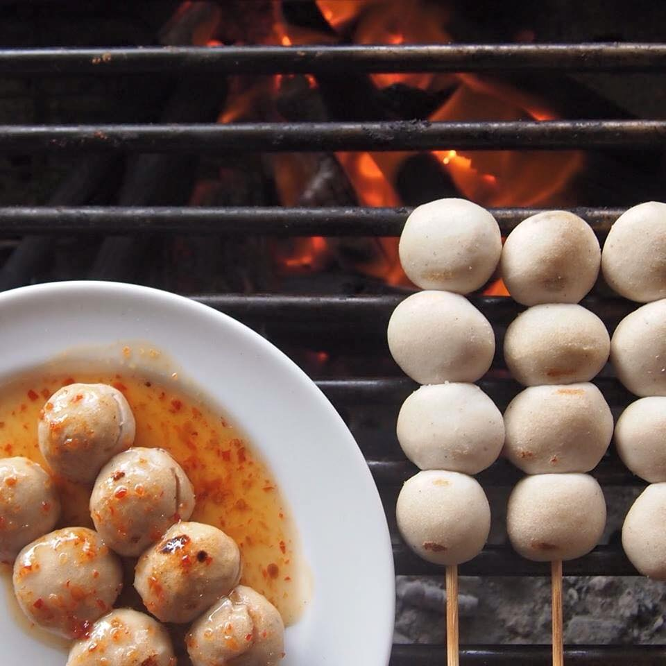

 จุฑารส ร้านอาหารที่มีความอร่อยโดดเด่นมาเป็นเวลายาวนานเริ่มตั้งเเต่ปี 1969 ที่คงอยู่คู่กับย่านสยามเเควร์ที่บอกเลยว่าถึงเเม้เวลาจะผ่านมายาวนานเเละก็มีร้านอาหารใหม่ๆ เปิดมาเป็นคู่เเข่งหลายร้านเเต่ก็ยังสามารถคงความเก๋าแบบเดิมอย่างไม่เปลี่ยนเเปลงค่า ร้านบรรยากาศสบายๆ เเบ่งเป็น 2 ชั้น ใครที่ชอบนั่งทานไปดูคนสัญจรไปมาก็นั่งทานที่ชั้นเเรก เเต่ถ้าชอบความสงบหน่อยก็ขึ้นชั้น2